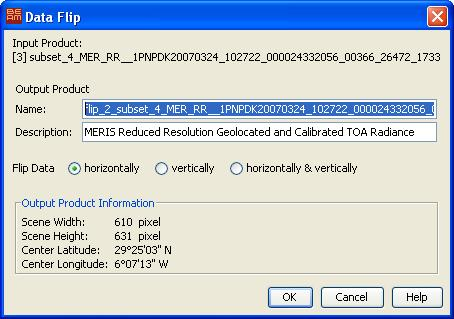

| Data Flip | |
The data-flip-command applies a flip operation to an input product and creates a new transposed output product.
After the new product has been created, you can change to VISAT's product browser in order to open an image view for a band of the new product.

You must specify an input product here. Note that this command operates on entire products, so you might want to create a product subset first.
Name: You can specify the output product's name here. The name must be unique within VISAT's open product list.
Description: You can enter a short description text for the new product here.
horizontally radiobutton
Mirrors the tie-point grids and bands of the product along the central, verical axis.
vertically radiobutton
Mirrors the tie-point grids and bands of the product along the central, horizontal axis.
horizontally & vertically radiobutton
Mirrors the tie-point grids and bands of the product along both, the central, verical and
horizontal axes.
Displays properties for the resulting output product.
Applies the flip transposition to the input product, creates the specified output product and closes the dialog.